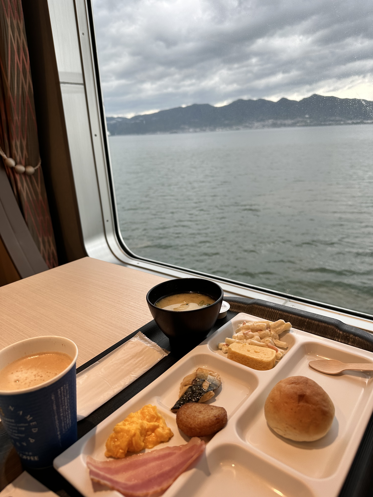
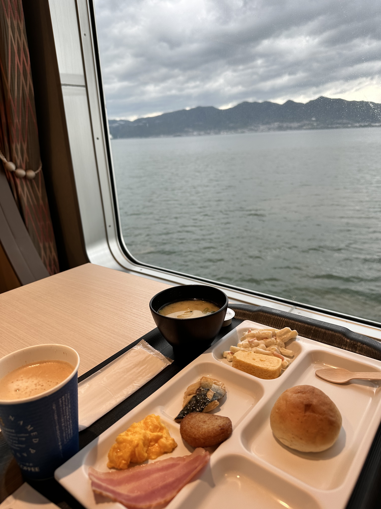
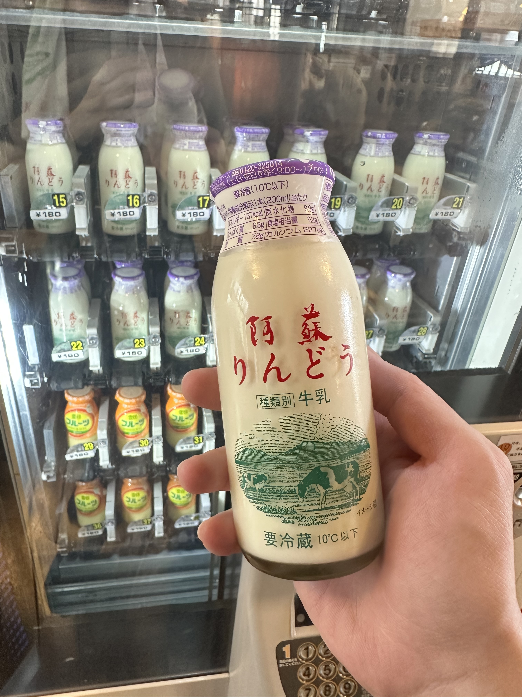
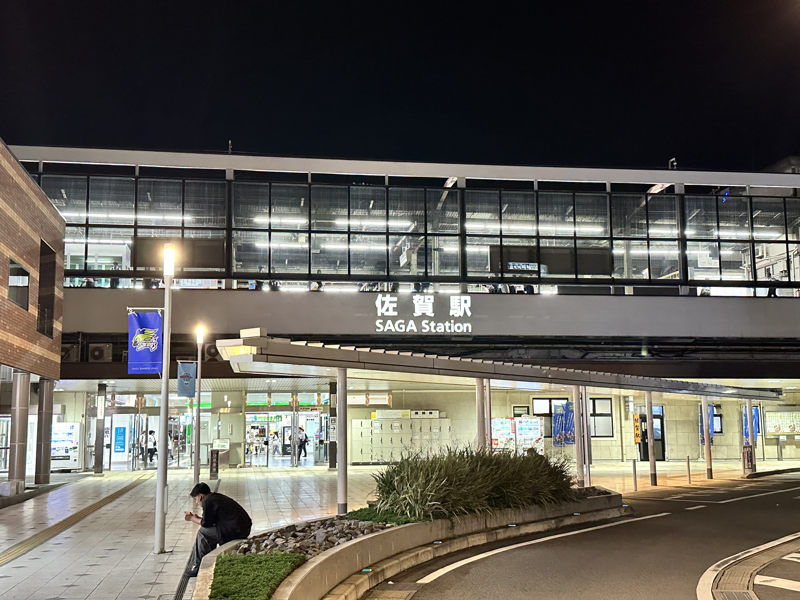
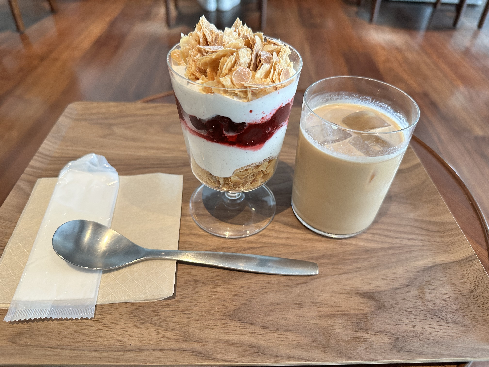

Day 1 #
大阪出發 - 商船三井さんふらわあ #
從大阪搭19:05的渡輪前往別府，搭船處就位在ATC HALL的隔壁，從大阪地鐵搭到貿易中心前站(トレードセンター前駅)下車就會到。
這次是先上網預約，再現場付款，拿到一張票券，上面的QR Code就是房間的出入鑰匙。
登船前可以逛旁邊的貿易中心，也順便買在船上吃的東西。
船舶介紹 #
這次因為前往別府，與上次搭乘的名門大洋フェリー不同家公司。
- 船內大廳

- 個室
這次的房間的門雖然是可以鎖，但是拉門，沒有完全封閉，所以需要注意不要吵到隔壁房間。
明石海峽大橋 #
Day 2 #
早餐 - 船上Buffet #
早餐還算蠻便宜的，就選擇在船上吃了，一邊欣賞窗外風景。
 

吃完早餐後，就下船前往附近公車站，開啟地獄溫泉巡禮。
地獄溫泉巡禮 #
從最上面的海地獄開始逛起，買了地獄周遊套票，全部有七個點，每個地獄大概相隔幾百公尺，最後兩個比較遠需要搭公車。
海地獄 #

鬼石坊主地獄 #
かまど地獄 #


鬼山地獄 #


白池地獄 #

血の池地獄 #
搭乘巴士從鐵輪站搭到血の池地獄前站下車。

這裡有紀念品店，入手了限定的鑰匙圈。

龍巻地獄 #
這裡地獄是間歇泉，一段時間會噴發。

最後終於集滿七個地獄的印章，結束了地獄溫泉巡禮。
午餐 - Furari #
午餐選了附近的拉麵名店，點了招牌的豚骨醤油ラーメン，非常好吃湯頭蠻順口的。

湯けむり展望台 #
飯後就散步到附近的展望台，可惜沒有拍到煙霧的景色。


大分香りの博物館 #
然後就沿路下山走到，大分香水博物館，順便來吹冷氣避暑一下。
別府駅 #
結束後就來到別府車站，順便去附近的飯店放行李。
車站前有溫泉手湯

やよい天狗 #
接著就來附近的商店街，順路看看巨大天狗。

竹瓦溫泉 #
商店街走到底就會到，當地有名的竹瓦溫泉。 泡澡後來一瓶阿蘇牛奶！ 
世界之塔(グローバルタワー) #
回飯店Check In 稍作休息後，來到世界之塔。

上來都沒有人，包場了！


晚餐 - 天丼 とよ常本店 #
晚餐在逛完車站附近的百貨後，選了一間評價不錯的天丼店，食材新鮮還不錯吃。 這裡有名的炸雞天婦羅，炸得很酥脆，裡面肉很軟嫩不乾柴。
Day 3 #
九州橫斷特急 #
隔天一早從別府到熊本，搭乘九州橫斷特急，大概3個半小時。

熊本駅 #
抵達熊本站已接近中午。
午餐 - 大漁食堂 HERO海 熊本駅店 #
午餐選在熊本車站附近吃，原本找了一間叫天外天的拉麵，但人太多了，
就另外找了一間壽司店，結果還蠻好吃的。


AMU PLAZA 熊本 #
吃飽飯後就去旁邊的百貨走走，到處都看得到海賊王，不愧是尾田老師的故鄉。

 在 Kiddy Land 入手了限定的鑰匙圈。
在 Kiddy Land 入手了限定的鑰匙圈。

熊本城 #
接著來到熊本城。
走了一段路後就會到天守閣。

 裡面非常現代化，還有冷氣。
裡面非常現代化，還有冷氣。


晚餐 - 熊本ラーメン黒亭 下通店 #
來吃一下熊本當地有名的黑亭，這裡的特色是會有生蛋黃，吃到一半再加進去，有另一種風味。

晚餐 - 酒湊 SAKASOU #
與在熊本工作的朋友約在這裡見面，吃他推薦的居酒屋。
第一次吃生馬肉，口感跟味道有點像咬不爛的鮪魚。
生魚片都蠻新鮮的。
熊本台積電 JASM #
接著他就開車載我到他上班的熊本台積電，經過看看外面就走了，沒辦法進去🤣

索隆銅像 #
附近有索隆銅像就順路來看看了，晚上沒開燈還蠻暗的。
阿蘇山-草千里 #
朋友聽到我白天沒去阿蘇山，就開車帶我上去看看了。
不過晚上其實蠻黑的，都看不到什麼東西。
稍微看一下就載我回飯店了，隔天他還要上班，真的很感謝他抽空帶我逛逛。
Day 4 #
熊本熊廣場(くまモンスクエア) #
隔天一早來到熊本商店街附近走走，順路來看看熊本熊的店。

午餐 - お好み焼・鉄板焼 大文字 本店 #
午餐吃位在商店街內的御好燒，需要自己DIY親手做，旁邊有教學。
魯夫銅像 #
接著來看魯夫的銅像，就位在熊本縣廳的旁邊廣場。


博多駅 #
下午原本預計是要到佐賀的，晚上要入住佐賀的飯店。
結果搭錯班次，搭到沒有停高速基山站轉車的班次，是直達博多的班次，
就將錯就錯來博多逛了，反正車錢是差不多的，福岡也比較多東西好吃。
博多運河城 #
接著又來運河城逛。
晚餐 - 博多やきとり処 楽がき 中洲川端店 #
晚餐找了一間評價蠻高的燒鳥店，還蠻好吃的。


佐賀駅 #
到佐賀車站已經是晚上9點多。 
Day 5 #
ゆめタウン佐賀 #
佐賀市區其實沒什麼景點，加上時間有限只有半天的就決定，逛一下附近的購物中心就好。
然後在這裡的NAMCO大開殺戒，鄉下的機台真的超級佛心！兩隻都500日幣內就入手了！
午餐 - 佐賀牛レストラン 季楽 本店 #
都來到佐賀了，一定要吃的就是佐賀牛，找了一間名店，點了午間套餐。
鐵板溫度非常高，肉能煎到外脆內軟入口即化，就像和牛一樣非常油，煎完的油可以拿來炒青菜。


佐賀駅 - えきマチ1丁目 #
接著在車站旁邊的紀念品店，入手限定的吊飾。

晚餐 - 博多らーめんShinShin 福岡PARCO店 #
接著就搭車到福岡了，下午在天神商店街附近逛逛，
沿路會經過福岡 PARCO，就順勢在這裡吃晚餐。
排了2個人就入場了，湯頭沒有太重的豬骨味，個人覺得比一蘭還好吃。
自製的辣油還蠻香的。
宵夜 - とりかわ博多かわっこ 薬院店 #
這次來福岡的目的，其中一個就是這裡的雞皮，捲成特殊的形狀烤起來會外脆內Q！
找了一間飯店附近評價蠻高的雞皮店，果然沒讓人失望，非常好吃。
Day 6 #
ちいかわらんど 福岡パルコ店 #
這次吉伊卡哇剛好有新品，事先抽了早上福岡店入場的整理券，然後順便入手上次沒買到的限定鑰匙圈。


午餐 - 博多もつ鍋おおやま 福岡パルコ店 #
午餐就順勢在福岡 PARCO吃了，找了間牛腸鍋，點了午間套餐。
味噌湯底，配上比較油的牛腸還蠻搭的。
ブルーボトルコーヒー 福岡天神カフェ #
下午就在天神商店街、警固公園附近走走，逛累了加上天氣炎熱，找間附近的藍瓶咖啡休息。 
小倉駅 #
接近傍晚的時候前往小倉站，晚上入住小倉這邊的飯店。
福岡的住宿其實蠻貴的，想省預算隔天又預計前往北九州的話，住小倉這邊還不錯，價格便宜一半左右，從博多搭過來差不多1個小時。

晚餐 - 資さんうどん 魚町店 #
晚餐在小倉車站附近的，魚町銀天商店街逛逛，找了一間這裡有名的連鎖烏龍麵店來吃。
點了期間限定的穴子天婦羅烏龍冷麵套餐。
Day 7 #
下關 - 唐戶市場 #
隔天前往位於下關的唐戶市場，順便在這邊吃早午餐。
這天剛好是假日，人潮蠻多的。

因為沒吃過河豚，有點擔心不合胃口，就沒有點整盤的生魚片。
分別點了炸河豚跟壽司，來嚐鮮看看。

龜山八幡宮 #
吃飽來到魚市場旁邊的龜山八幡宮參拜。

赤間神宮 #
沿路一直走下去會走到赤間神宮。


大連神社、紅石稲荷神社 #
沿著赤間神宮旁邊的階梯再往上走，會走到大連神社、紅石稲荷神社。


魚町銀天街 #
下午就回到了小倉站這邊的商店街逛逛，因為6點就要搭前往渡輪港口的接駁車，沒有時間跑太遠的地方。
ぎょらん亭 魚町店 #
因為早午餐的壽司吃太飽，一直拖到了4點才吃飯，找了一間商店街附近評分還蠻高的拉麵店。
可以自己調整豚骨跟雞湯的比例。
福岡とりかわ 焼とり権兵衛 小倉魚町店 #
因為太想念前天宵夜的雞皮，於是附近又再找了一間解解饞，味道還不錯但還是福岡的好吃。
名門大洋フェリー #
晚上搭乘上次搭過的名門大洋的渡輪回大阪，從小倉站有免費的接駁車可以過去。
上次拍過船上的設施，就沒有再多拍了，不過早上有出來拍明石海峽大橋，又是不一樣的景色。
最後渡輪就抵達大阪了，結束了這趟九州之旅。